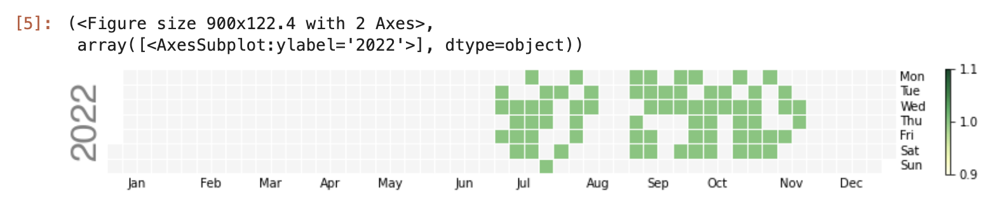

DMM英会話の受講履歴をCalendar Heatmapで可視化
DMM英会話の受講履歴をCalendar Heatmapで可視化するやつをPythonでなんとか作った。Pythonの実務経験ゼロなのでお作法や効率などはどこかに置いています。
スクレイピング部分はこちらのコードを参考にして流用させていただきました。
スクレイピングはサイト側の規約と負荷に十分に注意しましょう。
スクレイピング前準備
from logzero import logger
import logzero
import chromedriver_binary
import selenium
from selenium import webdriver
from selenium.webdriver.support.ui import Select
from selenium.webdriver.common.keys import Keys
from selenium.webdriver.common.by import By
from selenium.webdriver.support.ui import WebDriverWait
from selenium.webdriver.support import expected_conditions as ec
import requests
import os, time, datetime
import imaplib, email, re
logger.info("selenium initializing...")
options = webdriver.ChromeOptions()
#options.add_argument("--headless")
options.add_argument("--disable-gpu")
options.add_argument("--window-size=800x900")
options.add_argument("--disable-application-cache")
options.add_argument("--disable-infobars")
options.add_argument("--no-sandbox")
options.add_argument("--hide-scrollbars")
options.add_argument("--v=99")
options.add_argument("--ignore-certificate-errors")
options.add_argument("--homedir=/tmp")
options.add_argument('--user-agent=Mozilla/5.0')
options.add_argument('--disable-dev-shm-usage')
options.add_experimental_option("prefs", {'profile.managed_default_content_settings.images':2})
driver = webdriver.Chrome(options=options)
wait = WebDriverWait(driver, 5)
driver.implicitly_wait(10)
関数定義
def send_to_element(xpath, keys):
element = driver.find_element(by=By.XPATH, value=xpath)
element.clear()
logger.debug("[send_to_element] " + xpath)
element.send_keys(keys)
def send_to_element_direct(element, keys):
element.clear()
logger.debug("[send_to_element] " + element.get_attribute('id'))
element.send_keys(keys)
スクレイピング
事前に環境変数を定義しておく。
export DMM_ID=xxxxx
export DMM_PASS=xxxx
driver.execute_script("window.open()")
if not 'DMM_ID' in os.environ or not 'DMM_PASS' in os.environ:
raise ValueError("env DMM_ID and/or DMM_PASS are not found.")
DMM_ID = os.environ['DMM_ID']
DMM_PASS = os.environ['DMM_PASS']
driver.get('https://accounts.dmm.com/service/login/password/')
wait.until(ec.presence_of_all_elements_located)
driver.find_element(by=By.XPATH, value='//input[@name="login_id"]').click()
wait.until(ec.presence_of_all_elements_located)
time.sleep(3)
send_to_element('//input[@type="text"]', DMM_ID)
driver.find_element(by=By.XPATH, value='//input[@type="password"]').click()
wait.until(ec.presence_of_all_elements_located)
time.sleep(3)
send_to_element('//input[@type="password"]', DMM_PASS)
driver.find_element(by=By.XPATH, value='//input[@data-e2e="login_button"]').click()
wait.until(ec.presence_of_all_elements_located)
time.sleep(3)
if driver.find_element(by=By.XPATH, value='//input[@name="searchstr"]'):
logger.info("successfully logged in.")
レッスン受講履歴の取得
start_yearとend_yearが可変部分。ページ数を取得して必要な分だけループが効率的だと思うが諦め
import datetime
dt_now = datetime.datetime.now()
#必要に応じて変更する
start_year=2022
end_year=2023
target_month=[]
for y in range(start_year,end_year):
for m in range(1,13):
aa='{}{}'.format(y,m)
aa=datetime.datetime.strptime(aa, '%Y%m')
if aa > dt_now:
break
aa=aa.strftime('%Y%m')
target_month.append(aa)
logger.info("target_month : "+str(target_month))
resson_date=[]
for m in target_month:
for i in range(1,5):
url='https://eikaiwa.dmm.com/lesson/index/{}/?hd={}/'
url=url.format(i,m)
driver.get(url)
if driver.find_elements(by=By.XPATH, value='//header[@id="time"]'):
resson_times = driver.find_elements(by=By.XPATH, value='//header[@id="time"]')
for r in resson_times:
r=r.text.strip('レッスンノート').strip().partition('（')[0]
r=datetime.datetime.strptime(r, '%Y年%m月%d日')
r=r.strftime('%Y/%m/%d')
resson_date.append(r)
time.sleep(1)
logger.info("resson_date : "+str(resson_date))
calplotでcalendar heatmapを作成
import calplot
import numpy as np; np.random.seed(sum(map(ord, 'calplot')))
import pandas as pd
df_calmap = pd.DataFrame({'Date':resson_date})
df_calmap['Count'] = 1
df_calmap=df_calmap.drop_duplicates()
all_days = pd.date_range('1/1/2022', periods=600, freq='D')
days = pd.to_datetime(df_calmap['Date']).to_list()
e=df_calmap['Count'].to_list()
#print(days)
events = pd.Series(e, index=days)
calplot.calplot(events, cmap='YlGn', colorbar=True, edgecolor=None)
